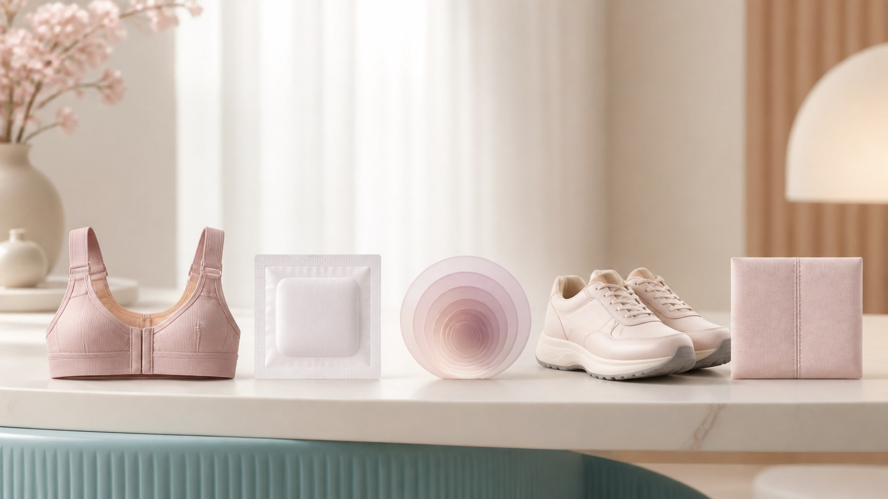

胸部整形 · 巨乳缩小
手术只是开始｜缩小后的恢复期与疤痕，提前心里有底
摘要：术后要经历固定、换药、逐步消肿与恢复活动，疤痕几乎不可避免。这篇讲清恢复的不同阶段与伤口护理，让你不美化也不吓自己。

手术做完，其实「恢复」才刚刚开始。很多人会把注意力全放在「今天做完了没有」上，等真做完了才发现，最考验耐心的反而是接下来几周的恢复期。这篇文章把恢复流程和疤痕这两个大家最关心的问题一次讲清楚，目的不是让你担心，而是让你心里有底、少走弯路。
头几天：固定、引流与换药。 刚做完手术，医生会用绷带、胸带或专门的衣物把胸部固定起来，目的是稳定组织、减少渗液和积液。有些人还会临时放一根引流管，把多余的液体引出来，过几天拔掉。这段时间要按医嘱换药、保持伤口干燥清洁。感觉到酸胀、紧绷是正常的，但如果疼痛异常、出现发烧或红肿明显加重，一定要及时联系手术的医疗机构，而不是自己忍着。
消肿是慢慢来的。 术后渗液和肿胀在头一两周最明显，胸部看起来可能有点大、有点硬，甚至和「缩小」的预期对不上号——这是暂时的，别急着下结论。肿胀通常在接下来几周逐渐消退，而真正的最终外形要等几个月甚至半年左右才稳定下来。这中间的变化，很多只是正常的恢复过程。
活动的限制要守得住。 恢复期不是完全不动，而是有节奏地动：日常的走动、轻度家务通常可以逐步恢复，但跑步、跳跃、上肢用力、提重物等要推迟。具体多久、什么时候能恢复运动，不同人不同，以手术医生的具体嘱咐为准。宁可多问一句，也别凭感觉硬来。
疤痕，是这件事绕不开的部分。 只要是靠切口完成的手术，都会留下疤痕。这不是「做得好不好」，而是手术本身的必然结果。疤痕的大小、位置、形状因手术方案而定，也和个人体质、愈合能力、护理情况有关。刚愈合时疤痕可能偏红、偏硬、微微凸起，之后会随时间慢慢变淡、变软。想改善它，可以按医嘱做好护理、避免搔抓刺激、注意防晒；疤痕体质的人要提前和医生说明。最终疤痕长成什么样，更多是因人而异。
复查不能省。 术后按约定时间回去复查，医生会观察愈合、处理问题、指导后续护理。有时拆线、调整固定、评估恢复都需要面对面完成。不要因为「感觉还好」就跳过复查，它是观察恢复、及时处理异常的重要环节。
值得强调的是，恢复过程和结果因人而异，有人快、有人慢，都和自己的身体条件有关。与其拿别人当参照，不如把关注点放回自己身上：按医嘱、按时复查、有问题及时问。对于疤痕和恢复期，别过度美化，也不必刻意吓自己——把它当作一个需要认真对待、也终会过去的过程，会轻松很多。
本文用于公众健康教育，不构成医疗建议，不替代面诊。医美决策请与具备资质的医师面诊后作出。